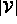
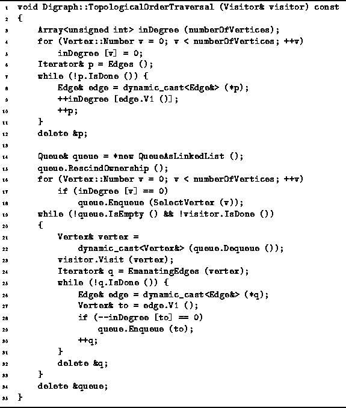
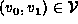
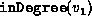
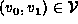
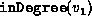

Data Structures and Algorithms
with Object-Oriented Design Patterns in C++
Data Structures and Algorithms
with Object-Oriented Design Patterns in C++Instead of implementing an algorithm that computes a topological sort, we have chosen to implement a traversal that visits the vertices of a DAG in the order given by the topological sort. The topological order traversal can be used to implement many other graph algorithms. Furthermore, given such a traversal, it is easy to define a visitor that computes a topological sort.
In order to implement the algorithm described in the preceding section, an array of integers of length  is used to record the in-degrees of the vertices. As a result, it is not really necessary to remove vertices or edges from the graph during the traversal. Instead, the effect of removing a vertex and all the edges emanating from that vertex is simulated by decreasing the apparent in-degrees of all the successors of the removed vertex.
In addition, we use a queue to keep track of the vertices that have not yet been visited, but whose in-degree is zero. Doing so eliminates the need to search the array for zero entries.
Program  defines the TopologicalOrderTraversal
routine of the Digraph class.
This routine takes as its lone argument a reference to a visitor instance.
The Visit function of the visitor
is called once for each vertex in the graph.
The order in which the vertices are visited is given by
a topological sort of those vertices.
defines the TopologicalOrderTraversal
routine of the Digraph class.
This routine takes as its lone argument a reference to a visitor instance.
The Visit function of the visitor
is called once for each vertex in the graph.
The order in which the vertices are visited is given by
a topological sort of those vertices.

Program: Digraph Class TopologicalOrderTraversal Member Function Definition
The algorithm begins by computing the in-degrees of all the vertices.
An array of unsigned integers of length  called inDegree
is used for this purpose.
First, all the array elements are set to zero.
Then, for each edge ,
array element  is increased by one (lines 3-12).
called inDegree
is used for this purpose.
First, all the array elements are set to zero.
Then, for each edge ,
array element  is increased by one (lines 3-12).
Next, a queue to hold vertices is created. Since the vertices are owned by the graph, the RescindOwnership member function of the queue is called. That way, the queue will not attempt to delete any contained vertices when its destructor is called. After the queue has been initialized, all vertices with in-degree zero are enqueued (lines 14-18).
The main loop of the TopologicalOrderTraversal routine comprises lines 19-33. This loop continues as long as the queue is not empty and the visitor is not finished. In each iteration of the main loop exactly one vertex is dequeued and visited (lines 21-23).
Once a vertex has been visited, the effect of removing that vertex from the graph is simulated by decreasing by one the in-degrees of all the successors of that vertex. When the in-degree of a vertex becomes zero, that vertex is enqueued (lines 24-30).
 Copyright © 1997 by Bruno R. Preiss, P.Eng. All rights reserved.
Copyright © 1997 by Bruno R. Preiss, P.Eng. All rights reserved.